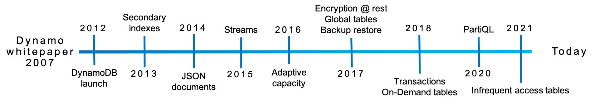
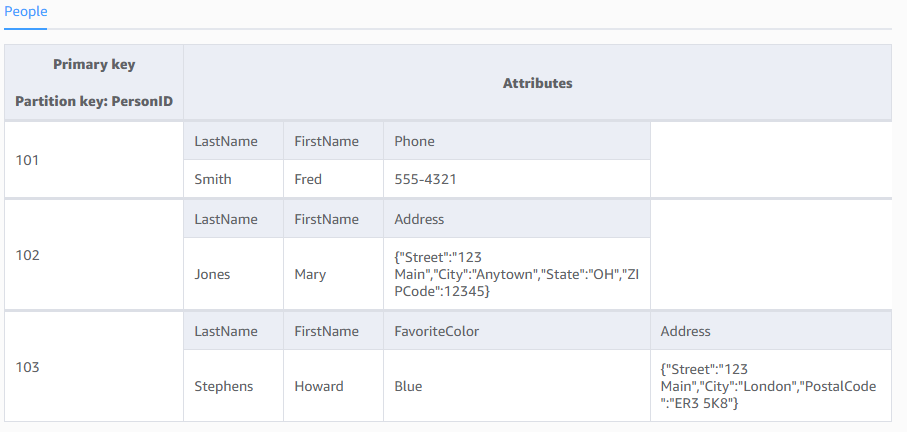
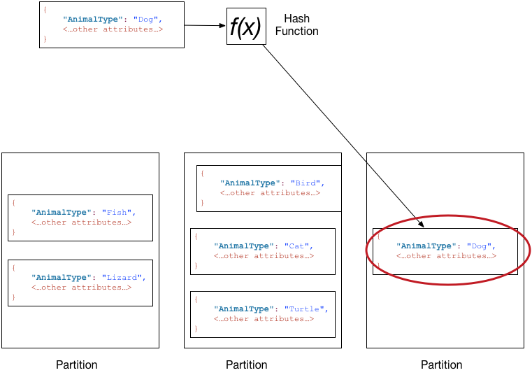
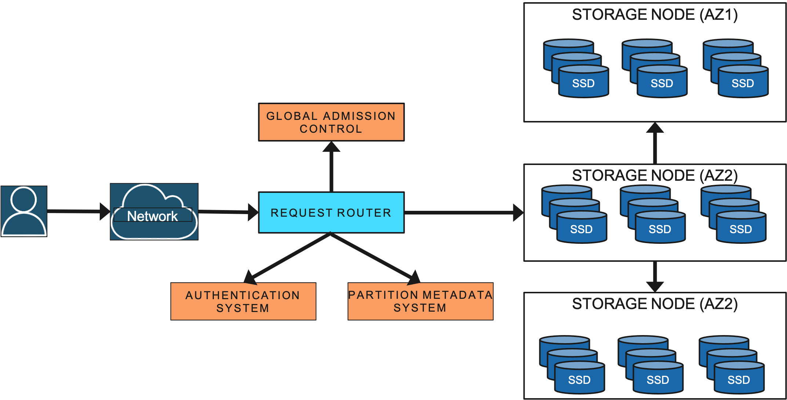
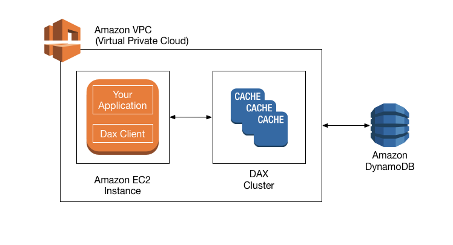

Banco de dados NoSQL de alto desempenho na AWS
Vítor Raimundo Fernandes Gabínio
Computação de Alto Desempenho · UEPB · 2026
Milhões de requisições
por segundo.
Respostas em milissegundos.
Como?

2007: artigo Dynamo (uso interno da Amazon) → 2012: DynamoDB, serviço público
Fonte: Elhemali et al., USENIX ATC 2022 (autores da AWS)

Sem esquema fixo: cada item pode ter atributos diferentes — só a chave é obrigatória
Fonte: AWS — DynamoDB Developer Guide, “Core components”
Passa por uma função hash e escolhe a partição
Ordena os itens dentro da partição e permite buscas por intervalo
Ex.: Artista + Música · sensor_id + timestamp

Dados espalhados em muitas partições = trabalho em paralelo
Fonte: AWS — DynamoDB Developer Guide, “Partitions and data distribution”

Roteador de requisições → nós de armazenamento (SSD) em zonas de disponibilidade diferentes
Fonte: Elhemali et al., USENIX ATC 2022
Multi‑Paxos elege o líder · escrita confirmada quando 2 de 3 gravam o log
Fonte: Elhemali et al., USENIX ATC 2022
Qualquer réplica responde
Metade do custo
Só o líder responde
Sempre o dado mais recente
Paga por requisição
Escala sozinho
Você define leituras e escritas por segundo
Custo previsível
1 RCU = 1 leitura forte/s de até 4 KB · 1 WCU = 1 escrita/s de até 1 KB

De milissegundos para microssegundos — até 10× mais rápido em leituras
Fonte: AWS — “DAX: How it works” e página do Amazon DynamoDB Accelerator
Fonte: AWS — “Global tables” e página do Amazon DynamoDB
Fonte: AWS News Blog, 26/08/2025
salve a gravação em video/demo.mp4
Em resumo: escala horizontal na prática
Perguntas?
Vítor Raimundo Fernandes Gabínio